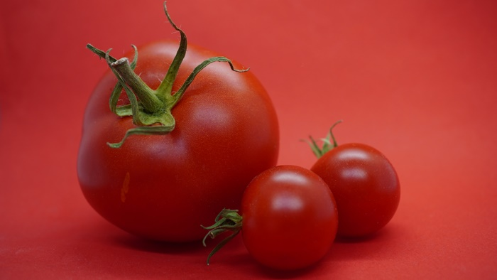
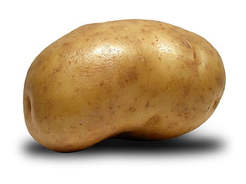
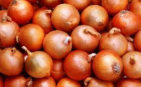

TOMATO
tomato, (Solanum lycopersicum), flowering plant of the nightshade family (Solanaceae), cultivated extensively for its edible fruits . Labeled as a vegetable for nutritional purposes, tomatoes are a good source of vitamin C and the phytochemical lycopene.
Get stated

POTATO
- Potatoes came from South America
- They last longer than you might think
- Potatoes were once used as a medical cure.
- Nobody knows who invented the potato chip
- Nobody knows who invented the potato chip

ONION
- The three most common onion colors are yellow, red, and white.
- There are less than 1,000 onion farmers in the United States.
- One serving of onion contains 45 calories.
- The average American eats almost 18.8 pounds of fresh and storage-type onions every year.
- Onions contain many antioxidants and sulfur-containing compounds .

LADY'S FINGER
- Ladyfinger, popularly known as bhindi in India.
- rich in nutrients . It is considered a good source of carbohydrates, proteins, vitamins, enzymes, calcium, potassium and many other nutrients.
- The botanical name of ladyfinger is Abelmoschus esculentus, and it belongs to the family Malvaceae.
- Ladyfinger is said to improve fertility in men by increasing the number of healthy sperm present
- Provides shiny hair: It has power pack nutrients and protein that nourishes one's hair

GARILC
- You Eat 2 lbs Per Year On Average. Obviously, some people eat way more garlic than others, but overall, the average person eats about 2 lbs of garlic each year.
- 2/3 Of All Garlic Is Grown In China.
- There's More Than The Bulb.
- Garlic Can Ward Off Blood Suckers. .
- Garlic Can Make Glue.